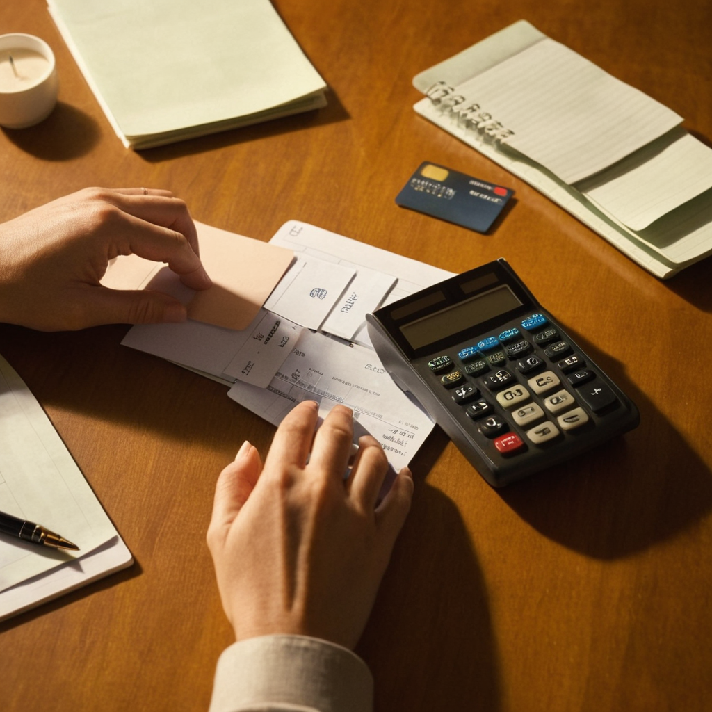

Tarjetas de Crédito: Cómo Usarlas de Forma Responsable y Eficaz
Las tarjetas de crédito se han convertido en herramientas esenciales en la vida financiera moderna, permitiendo la compra de bienes y servicios, la realización de pagos y la gestión de gastos. Sin embargo, el uso de una tarjeta de crédito debe ser manejado con responsabilidad, ya que, mal utilizadas, pueden generar deudas difíciles de manejar y afectar nuestra salud financiera. En este artículo, exploraremos cómo usar las tarjetas de crédito de manera eficaz y responsable, maximizando sus beneficios mientras minimizamos los riesgos.
¿Qué es una Tarjeta de Crédito?
Una tarjeta de crédito es un medio de pago que permite a los usuarios realizar compras ahora y pagarlas más tarde. A diferencia de las tarjetas de débito, que extraen dinero directamente de tu cuenta bancaria, las tarjetas de crédito funcionan como un préstamo otorgado por el emisor de la tarjeta (generalmente un banco). Cada vez que usas una tarjeta de crédito, el emisor te permite comprar ahora y pagar en una fecha posterior, normalmente con un período de gracia sin intereses. Sin embargo, si no pagas el saldo total dentro del período de gracia, se te cobrarán intereses, que generalmente son altos. Por lo tanto, las tarjetas de crédito deben usarse con prudencia para evitar caer en una espiral de deuda.
Beneficios de Usar una Tarjeta de Crédito
Aunque las tarjetas de crédito pueden tener un mal sabor debido a las altas tasas de interés, bien gestionadas ofrecen varios beneficios:
- Conveniencia:
- Construcción de crédito:
- Recompensas y descuentos:
- Seguridad:
- Flexibilidad:
Las tarjetas de crédito eliminan la necesidad de llevar efectivo y pueden usarse en casi cualquier lugar, tanto en línea como en tiendas físicas.
Usar una tarjeta de crédito de manera responsable puede ayudar a construir o mejorar tu puntaje de crédito, lo cual es crucial si planeas solicitar préstamos importantes en el futuro, como un crédito hipotecario.
Muchas tarjetas ofrecen programas de recompensas, descuentos en compras, puntos de viaje, devolución de dinero (cashback) o acceso a ofertas exclusivas.
En caso de fraude, las tarjetas de crédito suelen ofrecer mejores protecciones que el dinero en efectivo o las tarjetas de débito. Además, si pierdes tu tarjeta, puedes cancelarla rápidamente para evitar cargos no autorizados.
Si tienes un imprevisto económico, las tarjetas de crédito pueden ayudarte a financiar compras grandes de manera cómoda, siempre que mantengas un control sobre los pagos mensuales.
Cómo Usar las Tarjetas de Crédito de Forma Responsable
Aunque los beneficios de las tarjetas de crédito son considerables, el verdadero desafío radica en utilizarlas correctamente para evitar caer en deudas. Aquí te ofrecemos algunos consejos sobre cómo hacer un uso responsable de las tarjetas de crédito:
No Gastes Más de lo que Puedes Pagar
Paga el Saldo Total Siempre que Sea Posible
Haz Pagos Mínimos, pero No Te Conformes con Ellos
Mantén un Bajo Nivel de Utilización de Crédito
Evita los Avances de Efectivo
Revisa tus Estados de Cuenta Regularmente
Este es, sin duda, el consejo más importante para utilizar las tarjetas de crédito de manera responsable. Una de las principales razones por las que las personas terminan endeudadas es porque gastan más de lo que pueden pagar. Si bien las tarjetas de crédito ofrecen una línea de crédito que parece tentadora, es fundamental que se utilicen dentro de los límites de tu capacidad de pago mensual. Si bien muchas personas se sienten tentadas a realizar compras impulsivas, es crucial recordar que todo lo que gastes con la tarjeta deberá pagarse en algún momento. Para evitar gastos innecesarios, realiza un seguimiento de tu presupuesto mensual y asegúrate de que los pagos de tu tarjeta se ajusten a tus ingresos.
Si pagas el saldo completo de tu tarjeta de crédito antes de la fecha de vencimiento, evitarás cargos por intereses. De hecho, muchos emisores de tarjetas ofrecen un período de gracia, lo que significa que, si pagas tu saldo completo dentro de un tiempo determinado (por lo general, 20-30 días después de la compra), no te cobrarán intereses. Esta es una excelente manera de disfrutar de los beneficios de la tarjeta de crédito sin incurrir en costos adicionales.
Aunque hacer el pago mínimo requerido en tu estado de cuenta es mejor que no pagar nada, es importante entender que los pagos mínimos están diseñados para beneficiar a los emisores de tarjetas. Si solo realizas pagos mínimos, podrías terminar pagando mucho más en intereses y extender el tiempo de pago de tu deuda de manera innecesaria. Si no puedes pagar todo el saldo en un mes, trata de abonar una cantidad mayor al pago mínimo. De esta manera, reducirás el saldo pendiente más rápido y pagarás menos en intereses.
La utilización del crédito es uno de los factores más importantes en la determinación de tu puntaje de crédito. Se refiere a la proporción de tu crédito disponible que has utilizado. Se recomienda mantener esta cifra por debajo del 30%. Esto significa que, si tienes un límite de crédito de $5,000, no debes gastar más de $1,500 en la tarjeta. Mantener un bajo nivel de utilización muestra a los prestamistas que eres responsable con tu crédito y que no dependes demasiado de él, lo que puede mejorar tu puntaje de crédito.
Los avances de efectivo con tarjetas de crédito pueden ser tentadores, pero es mejor evitarlos. A diferencia de las compras, los avances de efectivo generalmente tienen tasas de interés más altas y no cuentan con un período de gracia. Esto significa que empezarás a pagar intereses sobre el monto que retires desde el mismo momento en que se realiza el avance. Además, también pueden aplicarse comisiones por retirar efectivo, lo que hace que esta opción sea aún menos favorable. En lugar de depender de avances de efectivo, es más saludable encontrar otras formas de financiamiento si necesitas dinero urgente.
Es fundamental revisar tus estados de cuenta para asegurarte de que todos los cargos sean correctos. Si notas algún cargo no autorizado o erróneo, debes contactar a tu emisor de inmediato para resolver el problema. Además, esta práctica te ayudará a mantener un control sobre tu gasto y a detectar rápidamente cualquier comportamiento financiero no deseado, como compras impulsivas o un uso excesivo de la tarjeta.
Consideraciones Adicionales al Usar Tarjetas de Crédito
¿Cuántas Tarjetas Deberías Tener?
No hay una respuesta única a esta pregunta. Algunas personas se sienten cómodas con una sola tarjeta de crédito, mientras que otras prefieren tener varias para aprovechar diferentes recompensas y beneficios. Sin embargo, lo importante es no abrir más tarjetas de crédito de las que puedas manejar. Demasiadas tarjetas pueden llevar a la tentación de gastar más de lo que puedes pagar, lo que puede resultar en deudas difíciles de manejar. Mantén un número de tarjetas de crédito que puedas gestionar adecuadamente y que ofrezcan beneficios alineados con tus necesidades financieras.
¿Qué Hacer si No Puedes Pagar a Tiempo?
Si alguna vez te encuentras en una situación en la que no puedes pagar tu tarjeta de crédito a tiempo, es importante que no ignores el problema. Contacta con tu emisor y trata de negociar un plan de pagos o una extensión de plazo. Muchos emisores están dispuestos a trabajar contigo si te comunicas de manera proactiva.
Conclusión
Las tarjetas de crédito son herramientas poderosas que, si se usan de manera responsable, pueden proporcionarte una gran flexibilidad financiera y ayudarte a construir un historial crediticio sólido. Sin embargo, el uso irresponsable de las tarjetas puede llevarte a una deuda insostenible y afectar tu puntaje crediticio. Al seguir los consejos mencionados en este artículo, como no gastar más de lo que puedes pagar, mantener una baja utilización de crédito y revisar tus estados de cuenta, puedes asegurarte de que las tarjetas de crédito sean una herramienta positiva y beneficiosa en tu vida financiera. Con la educación y disciplina adecuadas, las tarjetas de crédito no solo son una forma conveniente de pagar, sino también una estrategia clave para gestionar tus finanzas personales y construir un futuro económico más estable.